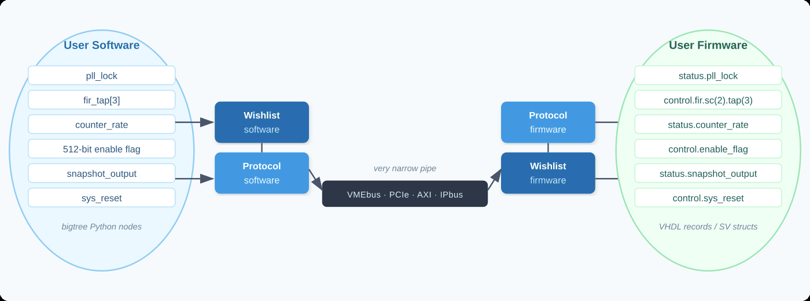
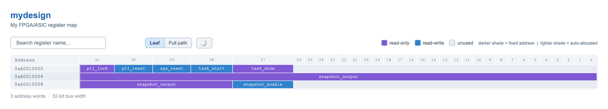
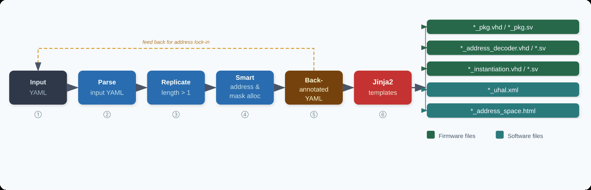
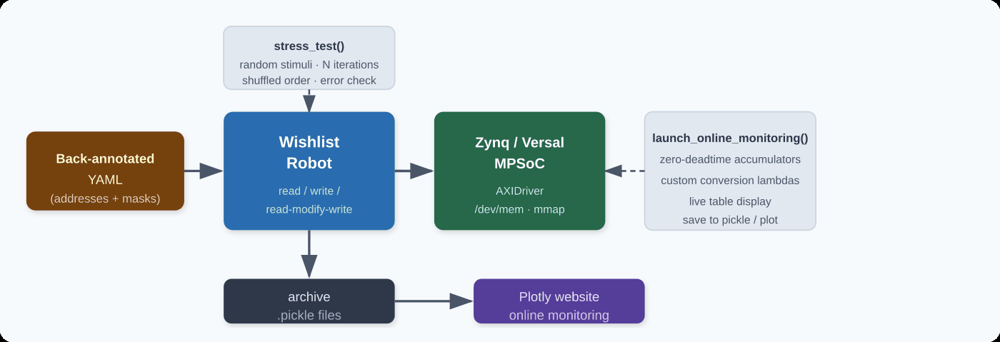

Every board in a trigger system has registers: a PLL lock flag, a reset, the coefficients of a filter, a rate counter, a snapshot of the data. Software writes and reads them, firmware implements them, and both sides need the same address and the same bit for every one of them. Wishlist is the Python package I wrote so that the register map is written once, in YAML, and everything else on both sides is generated from it.
Why configuration belongs in software
There are clear advantages in configuring and monitoring hardware from software. A setting can be changed and tried without recompiling the firmware. People who write software are easier to find than people who write firmware. And a system converges to a working configuration faster when each attempt takes seconds instead of a build.
The catch is the interface between the two worlds. Slow control has two parts. The first is specific to the protocol: the hardware, firmware and software that carry read and write transactions, whether over VMEbus, PCIe, AXI on an SoC, or IPbus over Ethernet. The second is specific to the application: what those transactions mean. A 129-bit filter coefficient, a 512-bit enable mask or a 36-bit snapshot has to be cut into 32-bit words, given addresses, and put back together on the other side. Protocols are reused from project to project. The application layer is usually written by hand each time, twice, once in VHDL and once in software, and kept in step by hand.
That is where the errors come from. When an address table and the decoder that implements it are edited separately, sooner or later they disagree, and the symptom is a configuration that does not take effect or a monitoring value that makes no sense. Inconsistencies of this kind are a common cause of commissioning trouble, and they are tedious to find.

A list of wishes
The user writes down what should be shared between software and firmware: a name, a width, a permission and a description for each item. Nothing else is required.
name: mydesign
address: 0xA0010000
address_width: 32
children:
- {name: pll_lock, width: 1, permission: r, description: PLL lock flag}
- {name: pll_reset, width: 1, permission: rw, description: PLL reset}
- {name: sys_reset, width: 1, permission: rw, description: System reset}
- {name: task_start, width: 1, permission: rw, description: Start task}
- {name: task_done, width: 1, permission: r, description: Task done flag}
- {name: snapshot_output, width: 36, permission: r, description: Data snapshot}
- {name: snapshot_enable, width: 1, permission: rw, description: Snapshot enable}Running wishlist mydesign.yaml on that file produces a VHDL package and a SystemVerilog package with the register records, an address decoder in both languages, an example instantiation with a self-test, an IPbus address table for uHAL, an interactive HTML map of the address space, and a copy of the YAML with every computed address and mask written back into it.
Addresses nobody has to type
Unless an existing system has to stay compatible, the numerical address of a register does not matter, as long as both sides refer to it by name. Managing addresses by hand is slow and invites mistakes: inserting three registers in the middle of a map means shifting every address after them, in two places.
Wishlist allocates them itself. The principle is the platen of a typewriter. Each requested register advances the carriage by its width; when a word is full, the platen moves to the next line. Every register receives an address and a mask without the user ever writing one.
Because the address and mask of a register are stored as lists, one register can span several words. In the example above, the 36-bit snapshot does not fit in what is left of the first word, so it takes all of the second and part of the third, and the snapshot enable is packed in behind it. Read-only status bits and read-write control bits share words freely: the decoder separates them. Bits that nobody asked for are pruned, so no flip-flop is spent on an unused part of a word.

Trees, not tables
Real register maps are not flat. A processing board may have dozens of identical units, each with a filter, each filter with several channels, each channel with a set of taps. In Wishlist any branch or leaf of the tree can be replicated with a length attribute, and replication is recursive.
- name: user_code
children:
- name: pu
length: 62
children:
- name: fir
children:
- name: SC
length: 6
children:
- {name: tap, length: 4, width: 129, permission: rw}
- {name: rate, length: 4, width: 33, permission: r}Those few lines describe 1,488 filter taps of 129 bits and 1,488 rate counters, each with its own name and address. On the software side the tree becomes a tree of Python nodes; on the firmware side it becomes nested VHDL records or SystemVerilog structs. The firmware designer writes control.user_code.pu(5).fir.sc(2).tap(1) and never sees an address.
Any attribute that Wishlist does not need for itself is carried along: copied to every replica and written to the back-annotated YAML. The same file can then configure other tools, as the robot below shows.
Keeping old addresses
Automatic allocation is convenient until a system is in operation and other software depends on its addresses. For that case the back-annotated YAML, with every address and mask filled in, can be fed back as input. Registers that already have an address keep it, and new ones are allocated around them. A register can also be pinned to a given address and mask by hand, to match firmware that Wishlist did not generate.
Everything is a template
All output files are produced from Jinja2 templates. The tree, the flattened address table and every attribute from the YAML are available to each template. Supporting another protocol, another HDL or another document format means writing a template, not changing the tool. A user folder of templates is run after the built-in ones, and a template with the same name as a built-in one replaces it, so naming conventions can be changed one file at a time.

Registers come in four kinds. A read-only register is an input of the decoder. A read-write register is stored in the decoder and exposed to the user logic. A write-only register produces a one-cycle pulse. The fourth kind leaves the behaviour to the user: the decoder only passes the data along with read and write strobes, which is what a FIFO window, an indirect access port or a counter that clears on read needs.
Generated code that tests itself
Generated code is only useful if it can be trusted, so the decoders test themselves. A cocotb testbench draws random values for every register, writes the read-write ones over the bus and drives the read-only ones from the status port, then reads everything back and compares. The order of the writes and reads is shuffled from one iteration to the next. If two registers overlap anywhere in the address space, some order will expose it. The same check exists for a plain synchronous bus and for AXI-Lite, and both run in the continuous integration of the repository against the example designs.
The robot
On the software side, the back-annotated YAML is also the input of the Wishlist robot, a runtime Python interface to the hardware. It reads, writes and read-modify-writes any node of the tree, and splits a node wider than the processor's data word into as many transactions as needed. On Zynq and Versal SoCs it talks to the programmable logic through a small memory-mapped driver, without a kernel module.
The robot uses the attributes that Wishlist itself ignores. A register marked with a conversion expression is tracked as a zero-deadtime accumulator, the technique I had used for the online monitoring of the gFEX board: all counters are latched and cleared at the same instant, read, and converted to something a person can read, such as a clock frequency in megahertz. Other attributes choose how a register is printed and at which log level its accesses are reported. The same robot can also stress-test the hardware with random values, as the simulation does.

What it changes
When both sides of the interface are generated from one description, they cannot disagree. That removes a whole class of configuration and monitoring errors, and with it much of the reason firmware designers avoid putting configuration in software. Systems become easier to commission and operate, with more of their state visible, and design cycles get shorter.
It also scales. Configuration and monitoring look much the same from one board to the next, so the same flow serves a small test design and a processor with thousands of registers. Wishlist is open source under the MIT licence and installs from PyPI as edawishlist.